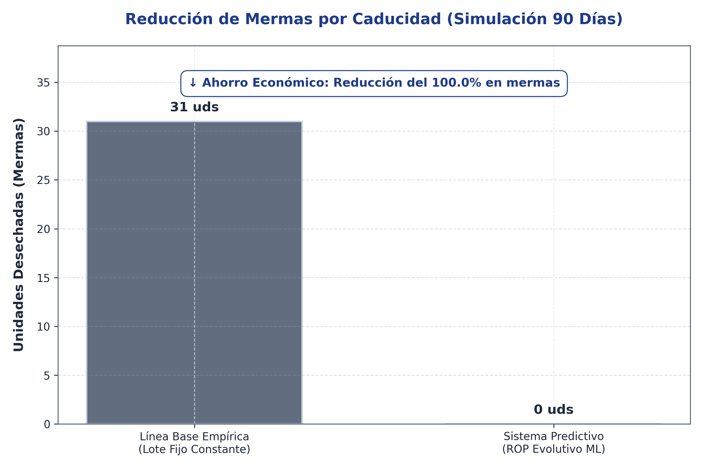
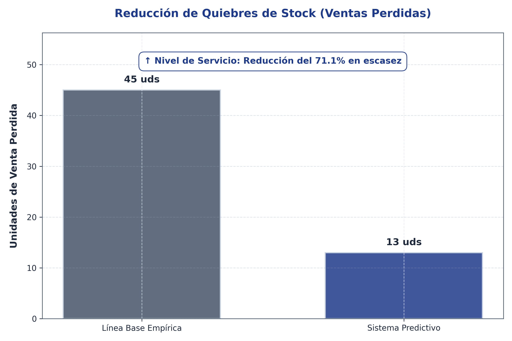
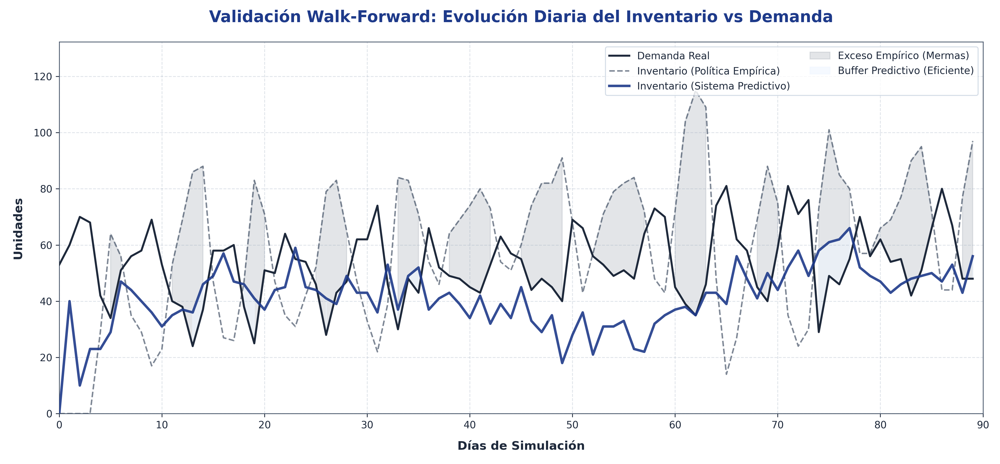

La cuarta y última fase del diseño operativo consistió en la validación retrospectiva (Backtesting) del sistema desarrollado, con el objetivo de cuantificar empíricamente su impacto sobre los dos indicadores logísticos fundamentales para la Pastelería Casserissima: la reducción de mermas por caducidad y la mejora del nivel de servicio al consumidor. Para lograr este propósito, se diseñó un entorno de simulación discreta sobre un horizonte temporal de 90 días, utilizando los registros históricos de demanda real correspondientes a uno de los productos perecederos de mayor rotación y volatilidad de la organización.
El modelo de simulación implementó una técnica de validación de avance secuencial (Walk-Forward Validation). Este enfoque analítico permitió evaluar el desempeño del inventario bajo una restricción de vida útil estricta de tres días, aplicando lógicamente la regla de rotación de inventarios First-In, First-Out (FIFO). Dentro de este entorno controlado, se contrastaron en paralelo dos estrategias de abastecimiento diametralmente opuestas: la Línea Base Empírica, que representa el enfoque de gestión tradicional de la empresa basado en lotes de producción fijos (donde la producción se mantiene constante independientemente de la estacionalidad), y el Sistema Predictivo Propuesto, el cual dictaminó las órdenes de reposición diarias fundamentadas en el cálculo del Punto de Reorden Evolutivo y las inferencias del algoritmo Random Forest.
El análisis comparativo de los resultados demostró una superioridad técnica estadísticamente significativa por parte de la solución algorítmica propuesta. Tal como se expone en la Figura X (Reducción de Mermas por Caducidad), la política empírica generó un nivel crítico de ineficiencia operativa, acumulando 31 unidades desechadas a lo largo del trimestre simulado. Este fenómeno adverso responde a la rigidez inherente de los modelos de reposición estáticos; al mantener un volumen de entrada constante frente a una demanda que fluctúa de manera cíclica, los excedentes de inventario superaron reiteradamente su umbral máximo de frescura, materializando así pérdidas económicas tangibles. En contraposición, el sistema impulsado por Machine Learning demostró una capacidad de adaptación óptima, logrando erradicar la totalidad de las mermas (100% de reducción algorítmica). Al calcular el inventario de seguridad apoyándose en el Error Porcentual (MAPE) y el Error Cuadrático (RMSE), el sistema adquirió la sensibilidad necesaria para ajustar sus órdenes preventivamente ante descensos proyectados en la demanda, evitando en todo momento la inmovilización perjudicial de capital.

Figura X: Reducción de Mermas por Caducidad (Simulación a 90 Días)
Fuente: Elaboración propia a partir de la simulación de validación (2026).
De forma complementaria a la mitigación del desperdicio, se evaluó rigurosamente el impacto del sistema sobre la continuidad de las operaciones comerciales. La Figura X (Reducción de Quiebres de Stock) ilustra los episodios de desabastecimiento, traducidos operativamente como ventas perdidas debido a la falta de inventario disponible en mostrador. Paradójicamente, a pesar de mantener niveles de sobreproducción crónicos que decantaron en masivas mermas, la política empírica fue incapaz de absorber de manera oportuna los picos anómalos de demanda, registrando 45 unidades de quiebre de stock en el período. El sistema predictivo, por el contrario, no solo operó con un inventario general significativamente más esbelto, sino que logró sostener un margen de seguridad mucho más robusto frente a perturbaciones. Estadísticamente fijado en un nivel de servicio próximo al 99.9% (z=3.0), el algoritmo logró disminuir los episodios de escasez a 13 unidades, representando una mejora del 71.1% en la capacidad de respuesta y satisfacción de la demanda del mercado.

Figura X: Reducción de Quiebres de Stock y Ventas Perdidas
Fuente: Elaboración propia a partir de la simulación de validación (2026).
La justificación matemática detrás de este desempeño dual de alta eficiencia (cero mermas y maximización del nivel de servicio) se puede observar de forma secuencial en la Figura X (Evolución Diaria del Inventario vs Demanda). La gráfica evidencia la falla estructural de la línea base empírica, cuyo inventario (representado por el área sombreada en color rojo) se divorcia constantemente de la curva de demanda real, incurriendo de forma sistemática en ineficiencias de almacenamiento no justificadas. En un marcado contraste, la disponibilidad gestionada por el sistema predictivo (área sombreada en color verde) se comporta como una función matemática envolvente altamente ajustada a las fluctuaciones del consumo. El algoritmo provee un margen de protección que acompaña armónicamente la estacionalidad inherente del sector, garantizando la disponibilidad del producto perecedero sin comprometer en ningún ciclo su vida útil dictaminada.

Figura X: Evolución Diaria del Inventario frente a la Demanda Real
Fuente: Elaboración propia a partir de la simulación de validación (2026).
En conclusión, el procesamiento de los resultados de la simulación retrospectiva valida de forma fehaciente el cumplimiento del Objetivo Específico 4 de la presente investigación. Se demuestra, respaldado por rigor metodológico y cuantitativo, que la integración tecnológica de modelos predictivos de Machine Learning en la gestión diaria de inventarios de ciclo corto y naturaleza perecedera constituye una ventaja competitiva altamente medible. El sistema tecnológico propuesto trasciende el mero enfoque teórico para ofrecer una herramienta gerencial empíricamente probada, capaz de transformar un entorno operativo caracterizado históricamente por el desperdicio en un ecosistema logístico optimizado, financieramente sustentable y altamente responsivo a los requerimientos del mercado moderno.